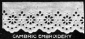
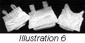

1926—The New-Way Course in Fashionable Clothes-Making
Lesson 29—Pretty Underthings
The Fascination of Pretty Underthings
There is something fascinating, something charming in dainty underthings—in soft, frilly, lacy camisoles and bloomers and chemise. One loves to fondle them, to wear them—to make them.
If you love pretty underthings—as you certainly must—you will be able to effect a tremendous saving. Instead of buying one dainty little camisole ready-made you can make yourself three. You can have many styles of bloomers, many lace-trimmed chemise—all the fluffy, frilly, lovely things your heart desires. And you will find that it is actually fascinating to make underthings, actually one of the most interesting and delightful phases of home clothes-making.
Appropriate Materials
The ideal material for fine undergarments is Nainsook. It may not have the richness of silk but it has excellent wearing and laundering qualities and can be transformed into very dainty things, especially when combined with lace and ribbon. Batiste is also a favored material, though it cannot boast the staunch wear-resistance of Nainsook.
We all have an inherent love of silken underthings—of soft silks and fine crepe-de-chines. But garments of these kinds are not always suitable nor practical. It is much wiser to make the kind of underthings that are dainty and pretty, yet at the same time staunch enough to withstand many visits to the tub.
Cotton crepe makes lovely underthings. Longcloth is almost as desirable as Nainsook, but is somewhat heavier and not so highly finished. Fine lawn is sometimes used for chemise, and handkerchief linen is excellent for camisole purposes.
Habutai or China Silk is used a great deal at the present time for camisoles and bloomers. Crepe-de-chine and wash satin are used, too, and are found quite satisfactory. French lawn is being used for nightgowns and cotton crepe is being used for almost all underthings. There is a wide variety of materials to choose from, a wide variety of styles, and an unusual opportunity for one to incorporate into delightful things-to-wear one's own ideas of taste and beauty. This lesson should prove particularly interesting to the woman who is a lover of the beautiful—yet a woman practical enough to realize the great savings that are made possible through making one's own underthings at home.
Pretty Trimmings (Illustration 29-1)
Lace is, and probably always will be, the most popular touch of trimming added to underthings. Hand embroidery is a close second—but as long as dainty French and Valencienes laces are available, they will have no rivals. Just a correct touch of lace can transform an ordinary underthing into a garment of exquisite beauty.
German lace, while coarser than Valencienes, adds a pretty finish to underthings. Cluny lace and Irish crochet are, of course, beautiful and medallions in any of these laces always add a note of dignified beauty to any garment. When underthings have simplicity as their keynote, a bound edge can be very easily applied with the binder attachment, and of course many dainty effects can be achieved by applying a touch of hand embroidery.
Machine embroideries are attractive and very practical for use on underwear. It is usually possible to buy the insertion and embroidery edge and beading to match, and if seam binding is used most attractive garments result. For the finer garments the batiste and Swiss embroideries are used while the more serviceable underthings may be finished with the cambric edging and insertion. Cambric embroideries are excellent for use on underwear for everyday wear for children. The illustration shows the different materials in beading insertion and embroidery edgings.
In making underthings, you will find much use for the hemmers, the binder, the ruffler and the tucker. Your edge-stitcher, too, will be found valuable. These remarkable little sewing-machine attachments will save hours of hand sewing and will join lace and insertion, or bands of tucking and lace insertion, neater and straighter than you could ever hope to do it by hand. Through the use of these attachments you can not only save a great deal of time and work, but you can add a smart tailored finished which no amount of fine hand-stitching can achieve.
Plain or French buttonholes are always used on underwear.
The Nightgown (Illustration 29-2)
The first thing you are going to make in this lesson is a kimona night gown—a simple garment, but one which has possibilities of great beauty if correctly and carefully made. You are also going to learn how to make bloomers, drawers and chemise. The making of camisoles and brassieres has been incorporated into one lesson, immediately following this.
Please bear in mind that we are teaching the making of underwear from commercial patterns, as this method is so much quicker and better than drafting. The commercial patterns for underwear are so nearly perfect that it will be unnecessary to alter the pattern purchased to your measure, unless your figure is not average in proportion.
However, if you are using a pattern that is too large or too small for you, the alterations may be made as directed. The only measures required in making alterations on kimona night gowns are the bust, side-front and side-back measures. for this it is necessary merely to take the measurements mentioned, the last two taken from center shoulder to floor.
If the pattern selected is a yoke pattern with set-in sleeves, the alterations on the yoke are made exactly as the alterations on the shoulders of a lining, as taught in Lesson 19. The skirt of this gown would be shortened or lengthened at a line about twelve inches below the joining of the yoke and skirt.
Very pretty kimona gowns can be made by having the upper part of the sleeve and the top of the gown made of insertion and tucks running from the end of the sleeve to the end of the neck line. This band may be wide enough to form a deep yoke and all of the sleeves, or it may be just a band on top of the sleeve and shoulder. The neck and sleeve ends may be finished in any way desired. The material used should be nainsook, longcloth, cotton crepe, soft silk or crepe de chine.
A kimona night-gown may be made from a bungalow apron pattern if you do not have a kimona night-gown pattern. Learn the bust-measure of the person for whom the gown is intended, and alter the kimona pattern to fit. Be careful that you do not make the mistake of having too much flare in the bottom of the gown. The seams at the side should not be very bias; two yards is ample width for a gown for a person of average normal build. Gowns may be made narrower for people of slight build.
Just beneath the sleeve, the gown should be about eight inches more than the bust measure; for example, if the bust measure is thirty-four, this measure beneath the sleeve should be forty-two inches in order to be entirely comfortable. Accordingly, one-half of your pattern should measure twenty-one inches at this point.
Altering the Kimona Nightgown Pattern or the Kimona Apron Pattern
Directions for the altering of the kimona nightgown pattern or the kimona apron pattern are valuable, and this method of altering the pattern should be thoroughly understood and mastered. It will be found very valuable later when you are making all your own clothes—and perhaps clothes for others.
- To make the pattern larger or smaller, cut the pattern from the shoulder to the hem, beginning at a point three inches from the neck-line and cutting it the same distance from the front throughout the length of the pattern. Separate the pieces and insert the required amount. Paste the strip of paper back of pattern before starting to cut the material. Make this alteration in both back and front of the pattern before proceeding to the next step.
- If the pattern must be made smaller, fold in at the point three inches from the neckline, one-fourth the amount to be taken out. Make the alterations on both front and back parts of the pattern. Length alterations should be made about 10 inches below armcye.
- You are now ready to prepare your material and cut out the garment. Press the material free of wrinkles and fold lengthwise through the center.
- If your pattern is in two pieces it does not necessarily mean that the garment must be cut in two pieces. The parts of the pattern may be joined at the shoulder according to the notches in the pattern, and the gown cut in one long piece.
- Place the pattern on the folded cloth, with the center front and center back of the pattern on the fold of the material and pin carefully in place.
- Cut according to pattern, paying strict attention to the construction marks and being sure that seam allowances are made. Mark all center lines.
- Now remove the pattern and spread out the gown, folding across the top of the shoulder and matching the notches on the underarm seams. Pin along the edges to hold the material in place.
- If you are making your gown by machine—as you should be doing if your material is not exceptionally fine—stitch the seams on your sewing machine. All seams should be the French seam type. (Lesson 4.)
- The gown has now reached the point where the hem is made. Determine the width the hem is to be, turn (Lesson 6) and baste. If you decide to make the hem one and one-half inches wide, allow one and three-quarters inches for the making of the hem. Make an underturning on the bottom of the gown of one and three-fourth inches and baste with even basting stitches along the turned edge.
- Now make a turn of one-fourth inch at the top of this hem. Pin or baste this hem for stitching. On either side of the seams, the hem will have some fullness. This should be gathered as taught in Lesson 6 under Gathered Hems.
- Stitch down the hem by machine, or if you are making the garment by hand use a very fine hemming stitch.
- You may make the upper part of the gown as simple or elaborate as you please. The neck and ends of the sleeves may be bound with the binder on the sewing machine using bias binding. Or it may simply be turned with a rolled hem (Lesson 6), and a lace edge added (Lesson 15). Cotton crepe gowns are very pretty when bound in this way.
- When making an elaborately trimmed gown, do not sew up the under arm seams until the trimming is planned and applied. Gowns made of fine Nainsook or some similar sheer material are more attractive when trimmed with lace and medallions, or with hand embroidery.
Trimming Suggestions
Lace edging, medallions and tucks when combined afford a pleasing trimming on nightgowns. We shall see exactly how this can be achieved. Prepare the material and cut the gown as in the previous directions, and proceed with the following directions.
- Make a group of four tucks, either by hand or machine. The first tuck should be three inches from the neck-line on either shoulder, and each succeeding tuck from one-eighth to three-sixteenths inches in width with no more than three-eighths of an inch space between tucks. The three tucks should be twelve inches long, extending an equal distance on either side of a line at the top of the shoulders from the neckline to the end of the sleeve.
- Open the gown and lay it flat on the table.
- You are now ready to apply the medallions. Baste the first medallion in position at the center of the front and attach by hand as taught in Lesson 15. Trim the sleeve end in the same manner.
- The lace beading should be sewed to the edge of the neck which must first be rolled and turned over. Rhe lace is attached by oversewing. Do the same to the ends of the sleeve. Now gather the lace edging slightly, and oversew it to the edge of the lace beading that has just been attached. Neither the lace edge or beading should be more than three-quarter inches in width.
- The underarm seams should now be French seamed and the bottom of the gown hemmed as was the gown in the preceding directions.
- To finish, run ribbon through the beading, and press.
In this gown, the French seams may be made with a fine running stitch using an occasional back stitch; or the seams may be made by machine. Hem with any stitch you find most convenient. Hand embroidery may be substituted for the medallions. First have the design stamped and then proceed with satin or eyelet embroidery as taught in Lesson 14. All hand embroidery should be done after the rest of the gown is finished.
You may, if you wish, omit the lace beading and edging in the gown and substitute instead embroidery scallops stamped at the edges and embroidered when the gown is otherwise completed. Embroidery patterns may be purchased at the pattern departments.
There are many other ways, besides those mentioned here, of trimming night-gowns attractively and neatly. Never make them too elaborate, however, as then they are likely to be uncomfortable and irritating. It is always wisest to make the gown plain and trim it merely with a touch of lace or embroidery. Avoid overuse of ribbon and elaborate trimmings of every kind.
Flannelette Gown (Illustration 29-3)
In the cooler days you will want a flannelette gown into which you can snuggle comfortably and forget all about the wind howling outside. Nothing is quite as warm and cozy as flannelette, you know.
The illustration shows a flannelette gown of practical design which may be made either of flannelette or cotton material. You will notice that the garment is made with a yoke, which makes the gown very much more comfortable than a similar gown, unyoked, would be. The long sleeves and high neck make the gown particularly desirable for cold-weather wear.
To make this gown you will need one length of material for the sleeve, one length each for front and back, and in addition one-half yard for the yoke, cuffs and other small pieces. Your material should not be less than 36 inches wide. If you find that pieces are needed to add the necessary width to the lower part of the gown, add these on the side, piecing selvedge to selvedge, with a very flat seam.
- Press pattern and material. Identify all the pieces of the pattern and if it will help you for present reference and later identification, write the names on each piece. If necessary, alter to suit your requirements.
- Fold the material lengthwise through the center, lay it on the table and pin the pattern in place. The center of the front should be on the length-wise fold and the large part or bottom of the nightgown should be at the cut edge of the material. The other piece or back should be placed with the bottom of the pattern next tot he top of the front, center back on the fold. In this way the material will run in one way and there will be harmony in the grain of the cloth.
- The yoke patterns should be now placed on the material, the center of the back on the length fold of the material. The bottom part should be toward the top of the back pattern, and the front part on the selvedge edge.
- The sleeve pattern should be placed on the folded material with the bottom of the sleeve toward the top of the body piece just placed on the material. The underarm of the sleeve should be at the lengthwise fold.
- You will find that the collar pattern fits nicely at the armcye curve of the sleeve with the center back of the collar at the fold of the cloth.
- We have given you in detail the correct way of laying the pattern because we want to be sure that the long pieces which are to be used for piecing at the side of the gown—for added width if it is necessary—are left after the garment is cut out. You are now ready to cut out the garment according to the pattern. Make all construction marks and seam allowances.
- Remove the pattern and baste or pin the parts together to conform with the construction marks. In flannelette gowns, all long seams should be made with tailored seams. (Lesson 4.)
- Join the shoulder seams of the yoke with a tailored seam.
- Seam the sleeves with the tailored seam.
- Take the back yoke and baste it to the back of the nightgown, the right sides together, adjusting the gathers evenly and matching the notches on yoke and skirt. Baste a bias facing to the seam the right side of the facing to the wrong side of the gown, the edge even with the edge of the seam.
- Stitch in place, making a small plain seam. This stitching will be through three thicknesses of material; that is, through the yoke, the facing and the skirt or body of the gown.
- Remove the bastings and turn the facing up in its proper position to cover the seam (the seam should turn up) and turn the edge of the facing and baste and stitch in position.
- Now take the front of the gown and finish the slashed opening at the center of the front. Your pattern will indicate what this finish is to be. Gather across the top.
- Baste each half of the front of the yoke to the corresponding side of the gown, the right side of the yoke to the right side of the gown. Arrange the fulness evenly and be sure to match construction marks. Baste facing on at this time in the same way as you did on the back of the gown.
- Stitch in a seam and remove bastings, turn the facing and finish exactly as you did the back yoke.
- Make a hem down each side of the front of the yoke, turning it to the wrong side.
- Sew up the underarm seam, using a tailored seam on the wrong side.
- Hem the bottom of the gown, making the hem the width allowed for when cutting.
- Make the collar. This may be hemmed, using a narrow hem or a narrow bias facing may be used around the outside edge.
- Baste the collar to the gown, matching the center of the back of collar and gown and the construction marks at other points. Baste a facing to this as you did at the bottom of the yoke. Turn this facing down in position, turn the edge under, and stitch into place. (The seam here should turn down.)
- The seams of the sleeves have been stitched and if you desire a short sleeve cut the sleeve to the proper length and hem at the bottom. If you are to use a long sleeve, put the bottom of the sleeve in the band cut for this purpose. This is a sewed on extension facing. Lesson 8. Baste the sleeves in the armcyes according to notches on garment and at the same time baste a bias binding to the armcye.
- Stitch through the three thicknesses to attach the sleeves to the gown and remove your bastings. Turn the binding under and hem down. Be sure you make this a binding and not a facing. Buttons and buttonholes at the front finish this gown.
By following these same directions you can make a pretty gown of some fine, sheer material such as Nainsook. The neck will be high and the sleeves long, as shown here, but the yoke may be made of a combination of insertion, embroidery and fine tucks. Of course, this yoke would be of one thickness only. The yoke and body part of the gown would be attached by the use of French seam, or seam beading may be used for the joining. As a pretty finishing touch, ribbon may be run through this beading, terminating in a bow or rosette in front.
You will probably want short sleeves with a gown such as is described immediately above. In this case, the edge of the sleeves may harmonize in trimming with the neck and yoke.
Bloomers and Drawers (Illustrations 29-4 and 5)
Sateen is an excellent material for bloomers. Batiste and cotton crepe are used a great deal, too. For drawers, muslin and nainsook are the most favored materials. But whatever material you use, you will have no trouble making well-fitting, attractive drawers and bloomer if you follow the ensuing step-by-step directions.
First, though, it is necessary that you obtain your body measures and compare them with the measurements of the pattern, altering the pattern to suit your particular requirements. This alteration differs in no way from the altering of the skirt pattern.
- For making bloomers place the material and pattern together, following the construction guide. Make all construction marks and seam allowances.
- The pattern indicates the place for reinforcement. Put in the reinforcements at this place, following the lines indicated.
- French seam the inside of the legs. Be sure the legs are made in pairs and not both for one side.
- Having completed these seams, you are now ready to match the seams in the crotch. Match also the construction marks and these seams, from the waistline in the back to the waistline in the front, and join, using a French seam. Finish the lower part of the legs with a ruffle and a casing for elastic, or simply with the casing.
- Bias casing should be used if the bloomers are ruffle-finished. The bias facing should be used to finish the ruffle. If there is no ruffle, just a hem may be used for the casing, or one may use a bias facing.
- A bias facing should also be added around the top, being wide enough to admit at least one-half inch of elastic.
- If a placket is desired, it should be put in before the top is finished either at the side or at the back, and the casing made continuous from the placket edges. To fasten, place buttons and buttonholes on the ends of the casing.
Drawers
The making of drawers and bloomers is very much alike, but the routine of the work will be given for both, making sure that you will have no trouble with either.
- Prepare the material and pattern in exactly the way taught for other undergarments.
- Place the pattern on the material in the most economical way, that is, so the least possible amount of cloth is wasted.
- Mark all construction marks.
- For closed drawers there will be plackets to finish on each hip. These should be bound or continuous plackets.
- After making the plackets join the seams on the inside of the legs using a French seam. (Be sure the legs are made in pairs.)
- After these are seamed up, finish the bottom of the legs in any way desired. This may be a hem and lace, or it may be lace and insertion; in fact any finish that will give a smooth flat appearance, for today, with the vogue for narrow skirts the underwear must be very flat. One has the choice of a straight line at the knee of a scalloped line or slashes at the side, and the corners may be left square or rounded.
- Match the construction marks at the front and back and the seams at the crotch and French seam the legs together.
- The top of both front and back sections are to be put on belts which are really sewed on extension facings. The belt should not be too snug. The front section of the belt is somewhat longer than the back section, this is made longer so that the front of the garment will be smooth and flat and also to allow the front placket to extend beneath the placket at the back. The ends of the belt should lap just the width of the placket at each side, and a button and buttonhole finishes the end of each belt, the buttonholes to be worked on the back belt.
If the drawers are the open type the bias edges from the center front to the center back of each leg will be faced with a sewed on bias facing. At the front these edges will be lapped just their width and stitched together for about six inches below the belt. The top will then be put in a belt which is really a sewed on extension facing, the opening being at the back where the belt will lap enough to insure the tight closing of the drawers at the back, or the belt may be opened at the center of the front, the drawers lapped the necessary amount at the back and the front lapped and closed at the front using small buttons and buttonholes to fasten.
The Chemise (Illustration 29-6)
You have already had one lesson on the making of the chemise—and that lesson was really the foundation of all chemise-making. The purpose of this lesson is to give you some interesting trimming suggestions which you may carry out in your own way—suggestions which will help you make the kind of dainty underthings you will be proud of.
You can gain a great deal of helpful information by studying ready-made underthings. Examine the chemise you see in the shops. Notice the trimmings, the finish—gain all the style suggestions you can. You can learn something from the simplest garment as well as the dainty, elaborate garment.
To add beauty to your made-at-home underthings—which certainly won't look "home-made" if you follow directions—make generous use of hand embroidery, lace, medallions, tucks, bindings or ruffles. You may have combinations, of course—such as lace and tucks, bindings and ruffles. But remember that overtrimming defeats its own purpose and makes the garment decidedly unattractive and in bad taste.
The chemise you made in a recent lesson was in the envelope style. This can very easily be made a straight-piece garment by cutting off the extension at the back and omitting the buttons of the front of the bottom. To finish, a ruffle or an edging of lace, tucks, binding or scalloping may be used around the bottom.
There are many interesting ways to trim the top of the chemise. In the chemise made previously, it would be possible to cut off the top of the garment, just below the lower part of the armcye and a straight yoke applied. This yoke may be made of a band of embroidery, or lace and embroidery insertion stitched together with the edge-stitcher. It would have to be just long enough to fit the top of the chemise where it has been cut and wide enough to make the chemise the exact length it was from armcye to bottom before the top was cut off. Shoulder straps may be of a combination of the material used in the yoke and lace.